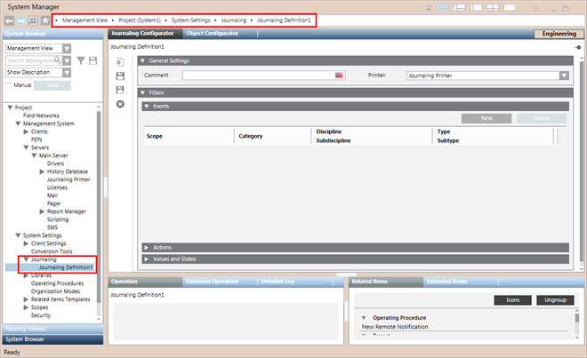
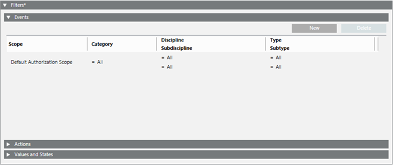
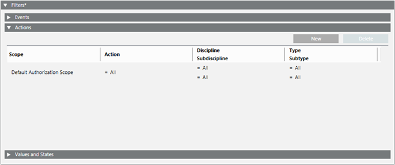
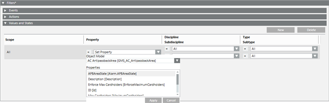

Journaling Definition
In Engineering mode, when you select a journaling definition in System Browser, the Journaling Configurator tab lets you configure the journaling definition by allowing you to select a journaling printer from the Printer drop-down list. It also lets you set items to be included in the printout using one or more filters (Events, Actions, Values and States).

Journaling Toolbar
When you select Journaling, the Journaling tab becomes available where you can create, save, and delete journaling definitions.
| Selection in System Browser [Engineering mode] | |
System Settings > Journaling | System Settings > Journaling > [journaling definition] | |
New | Create a new journaling definition. | Create a new journaling definition. |
Save | Save the changes made to the printers-templates list. | Save the changes made to the selectedjournaling definition. |
Save As | n.a. | Create a new journaling definition from the currently selected one. |
Delete | n.a. | Delete the currently selected journaling definition. |


Events Filters
The Events expander lets you set one or more types of alarms that will be printed out.

Each events filter occupies one row. An alarm must meet all the criteria on its row to be printed out. There is an OR logic between rows.
- To add a new row, click New.
- To remove a row, select it and click Delete.
Scope: By default set to All. Setting the Scope to All starts the journaling printing, if the other trigger criteria are satisfied, regardless of the scope configuration.
Set this field if you want to restrict the printout only to events originating from a specified group of target objects (scope):
- To set or change the scope, drag-and-drop a scope from Project > System Settings > Scopes into the Scope field.
- To reset the scope to All, right-click in the Scope field and select Reset to All.
Category, Discipline/Subdiscipline, and Type/Subtype.
You can use the equals (=) or not equals (≠) operators to filter by:
- The Category of the event (for example, Emergency or Fault).
- The Discipline/Subdiscipline of the event.
- The Type/Subtype of the event.
An event will be printed if it matches both the specified scope and any further criteria (category, discipline/subdiscipline, type/subtype, in/out) specified in its row.
Actions Filters
The Actions expander lets you set one or more operator or system actions that will be printed out.

Each actions filter occupies one row. An action must meet all the criteria on its row to be printed out. There is an OR logic between rows.
- To add a new row, click New.
- To remove a row, select it and click Delete.
Scope: By default set to All.
Set this field if you want to restrict the printout only to actions originating from a specified group of target objects (scope):
- To set or change the scope, drag-and-drop a scope from Project > System Settings > Scopes into the Scope field.
- To reset the scope to All, right-click in the Scope field and select Reset to All.
Action: By default set to All. Set this field to restrict the printout only to specified types of actions.
Discipline/Subdiscipline and Type/Subtype.
You can use the equals (=) or not equals (≠) operators to filter by:
- The Discipline/Subdiscipline of the action.
- The Type/Subtype of the action.
Values and States Filters
The Values and States expander lets you configure what changes of value (COV) or changes of state (COS) of field objects will be printed.

Each COV/COS filter occupies one row. A change of value/state must match all the criteria on its row to be printed out. There is an OR logic between rows.
- To add a new row, click New.
- To remove a row, select it and click Delete.
Scope: By default set to All. Set this field to restrict the scope of system objects that you want to monitor for changes in value or state.
- To set or change the scope, drag-and-drop a scope from Project > System Settings > Scopes into the Scope field.
- To reset the scope to All, right-click in the Scope field and select Reset to All.
Property: Specifies what property of the specified object model you want to monitor for changes in value or state.
The list of properties display according to the selected Object Model. If All is selected in the Property drop-down list, then all the properties for all the object models are configured.
Discipline/Subdiscipline, and Type/Subtype.
You can use the equals (=) or not equals (≠) operators to filter by:
- The Discipline/Subdiscipline of the object.
- The Type/Subtype of the object.

NOTE:
For printing, the COVs of a property of an Object Model, the VL flag for that property in the Object Configurator tab must be checked. For more information on how to set the VL flag of the property on, see Logging Data Values.